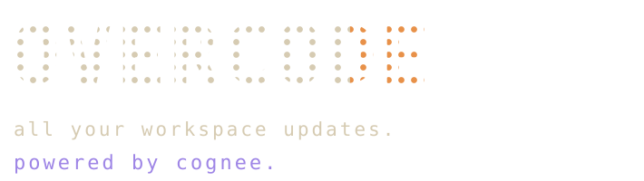
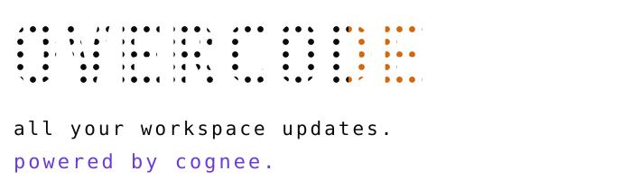
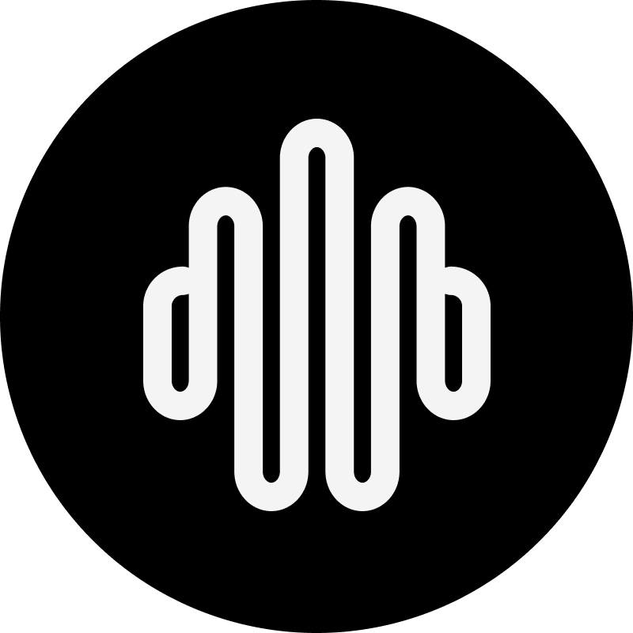

workspace dashboard
Read local repositories, branches, worktrees, stashes, and recent activity in one native surface.


Native desktop hub for Git workspaces, pull requests, bring-your-own-key AI providers, and Cognee-backed repository memory.

repository memory powered by Cognee.
approved summaries and module facts only.
Read local repositories, branches, worktrees, stashes, and recent activity in one native surface.
Track GitHub and GitLab review state beside the local repository context that explains it.
Run AI features through configured provider credentials without turning Overcode into a backend.
Retain approved summaries, module facts, and recall context without storing raw source or secrets.
Windows
v0.1.1
your platform
x64
Overcode-Windows-0.1.1-Setup.exe
83.0 MB
downloadLinux
v0.1.1
your platform
x86_64
Overcode-Linux-0.1.1.AppImage
113.4 MB
downloadmacOS
v0.1.1
your platform
apple silicon
in progress · watch releases
not shipped
watch releasesbuild from source
v0.1.1
npm
GitHub readme
source
read source steps